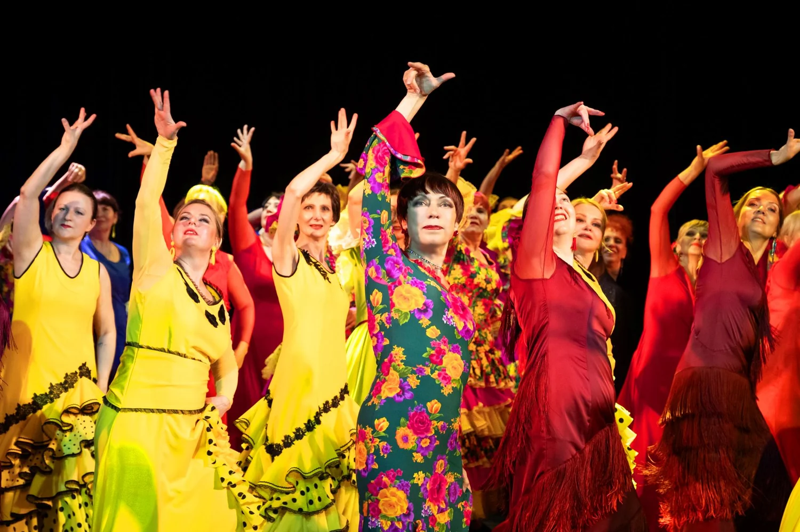

21 ноября 2026
Фестиваль в Боровске
Коллектив выступил на VIII межрегиональном фестивале Tierra Flamenca.
Репортаж театраТеатр и школа
Фотографии из репертуара, репортажи с концертов и полный каталог альбомов театра и школы.
21 ноября 2026
Коллектив выступил на VIII межрегиональном фестивале Tierra Flamenca.
Репортаж театра
30 мая 2026
Кадры майской программы и отклики зрителей после концерта.
Фотографии и отзывы